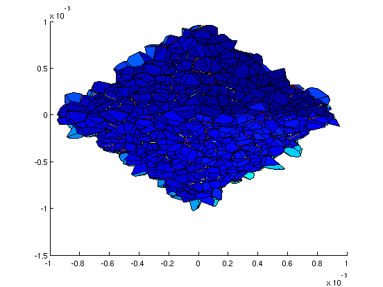

myGeometry=MacroscopicGeometry();
myGeometry.LoadGeometry('1block3D_Structured');
disp(myGeometry)
networkBuilder=NetworkBuilder(myGeometry);
network=networkBuilder.BuildNetwork();
network.ExportToParaview('tutorialMacroscopicGeometry_StructuredNetwork')
clear myGeometry
MacroscopicGeometry with properties:
Dimension: 3
Vertices: [8x3 double]
Blocks: {[1x1 struct]}
Boundaries: {1x6 cell}
AnisotropyBand: {1x0 cell}
NVertice: 8
NBlock: 1
NBoundary: 6
NAnisotropyBand: 0
NetworkType: 'StructuredNetwork'
PavageType: ''
ConvertToMeters: 1.0000e-06
RandomSeed: 0
Generation du reseau...
Reseau genere. Duree : 0 minutes 0.061937 s.
G�n�ration du fichier VTK...
Fichier VTK g�n�r�. Dur�e : 0 minutes 2.438662 s.
[V, E, F] = createOctahedron;
myGeometry=MacroscopicGeometry();
myGeometry.SetDimension(3);
myGeometry.SetConvertToMeters(1e-3);
myGeometry.SetNetworkType('PoreNetworkMeshFibrous') ;
myGeometry.SetPavageType('RandomVoronoi');
myGeometry.AddVertices(V);
nPore = 1000;
block=struct;
block.VertexNumbers=1:size(V,1);
block.Filling.PoreNumber=nPore;
block.Filling.FiberThickness=0.0001;
myGeometry.AddBlock(block)
for iBoundary=1:size(F,1)
boundary=struct;
boundary.Face=F(iBoundary,:);
boundary.Rugosity='rough';
boundary.Type='surface';
boundary.Name='';
myGeometry.AddBoundary(boundary);
end
networkBuilder=NetworkBuilder(myGeometry);
network=networkBuilder.BuildNetwork();
network.ExportToParaview('tutorialMacroscopicGeometry_octahedron.vtk')
viewer=Viewer(network.PrivateInternalOutputStruct);
viewer.View('Network')
myGeometry.WriteGeometryFile('Octahedron3D.txt');
Generation du reseau...
Calcul du diametre des liens...
Calcul du diametre des liens termine. Duree : 0 minutes 4.236330 s.
Reseau genere. Duree : 0 minutes 24.648169 s.
Writing VTK file...
VTK file writen. Time spent : 0 minutes 37.517691 s.
